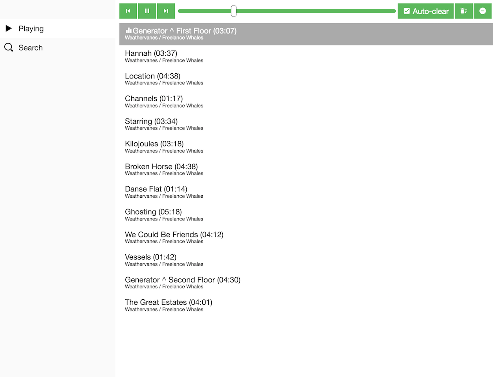
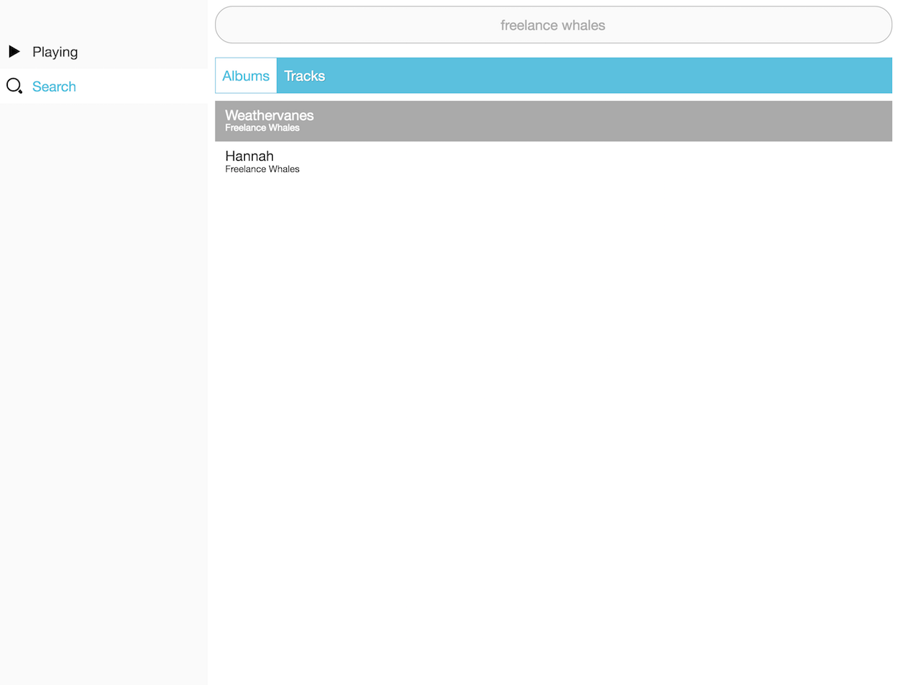

Mopidy-jukePi


Mopidy web client extension
Installation
Install by running:
pip install Mopidy-jukePi
Or, if available, install the Debian/Ubuntu package from apt.mopidy.com.
Configuration
Before starting Mopidy, you must add configuration for Mopidy-jukePi to your Mopidy configuration file:
[jukepi] # Enabled by default enabled = true # Override the websocket URL if you have a custom setup websocket_url = # Add the LastFM API key to take advantage of album art/descriptions lastfm_api_key = lastfm_api_secret = # Load custom javascript. Provide absolute/relative URLs. Will become # useful for custom plugins custom_scripts = # Callback function to call when app is loaded jukepi_callback = # The URIs to be used when searching search_uris = spotify
Project resources
About
JukePi is a web client for the Mopidy music server. Mopidy empowers you to create a custom music server that can connect to Spotify, play local mp3s and more.
In our office, we are using it with a Raspberry Pi as our Jukebox. Once this web client was created, the JukePi was born.
The application is a bespoke application with data models built upon Backbone. Even so, most models contain customisations to retrieve data from a Mopidy connection over Websockets. The websockets requirement is a core part of the Mopidy HTTP API and means that this client will be unable to function with IE9 and below. Special effort will be made to ensure that it functions well in all websockets enabled browsers.
Developer Instructions
To work on this project, you will need to have the node and npm binaries installed. Clone the project:
git clone git://github.com/meantimeit/jukepi.git && cd jukepi && git submodule update --init --recursive
Once complete, you will need to install the necessary npm packages:
npm install
During the course of development, you will need to re-create the build files. There are a number of scripts that will enable you to do this:
- npm run build-debug-js - Create a debug build of the JS
- npm run build-debug-css - Create a debug build of the CSS
- npm run build-debug - Create a debug build of the JS and CSS
- npm run build-js - Build the JS
- npm run build-css - Build the CSS
- npm run build - Build a release
Screenshots
 